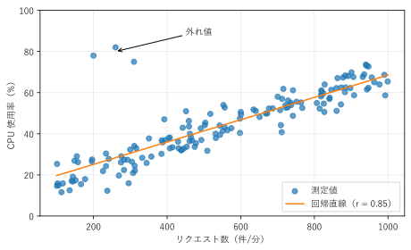
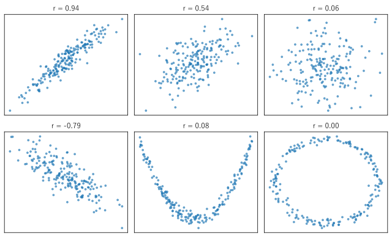
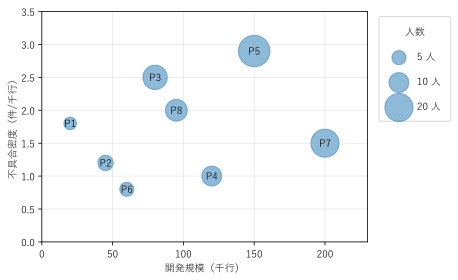

第 5 章 関係を見る
2 つの量の間に関係があるかどうか、あるならどのような関係かを見るには、散布図を使う。この章では、散布図とその読み方、相関係数との関係、点が多すぎる場合の対策、3 つ目の量を加えるバブルチャートを扱う。
散布図
散布図は、2 つの量的データの組 \((x_i, y_i)\) を、平面上の点として描くグラフである。横軸と縦軸の両方に位置という最も正確な視覚変数を使うため、2 つの量の関係を詳しく読み取れる。
図 14 は、架空の Web サーバーの、1 分あたりのリクエスト数と CPU 使用率の関係を描いたものである。

図 14 リクエスト数と CPU 使用率の散布図。橙色の線は回帰直線である
散布図からは、次のような点を読み取る。
関係の向き：リクエスト数が多いほど CPU 使用率が高い（右上がり）。
関係の形：点はおおむね直線に沿って並んでいる。
ばらつき：直線の周りの点の散らばり具合から、関係の強さが分かる。
外れ値：左上の 3 点は、リクエスト数が少ないのに CPU 使用率が高い。リクエスト以外の処理（バッチ処理など）が動いていた可能性がある。
一般に、横軸には原因側（説明する側）の量を、縦軸には結果側（説明される側）の量を置く。ただし、散布図で関係が見えても、それが因果関係であるとは限らない。
回帰直線
散布図に重ねた直線は、最小二乗法で求めた回帰直線である。直線 \(y = ax + b\) について、各点の縦方向のずれの二乗和
が最小になるように \(a\) と \(b\) を決める。NumPy では np.polyfit(x, y, 1) で求められる。回帰直線は関係の傾向を示すのに便利だが、外れ値に引っ張られやすい。第 1 章のアンスコムの例のデータ III が、その例である。
27def create_figure() -> Figure:
28 """散布図に回帰直線を重ねて描く."""
29 requests, cpu = make_data()
30 slope, intercept = np.polyfit(requests, cpu, 1)
31 r = np.corrcoef(requests, cpu)[0, 1]
32
33 fig, ax = plt.subplots(figsize=(6.5, 4))
34 ax.scatter(requests, cpu, color="C0", alpha=0.7, label="測定値")
35 line_x = np.array([100.0, 1000.0])
36 ax.plot(line_x, slope * line_x + intercept, color="C1",
37 label=f"回帰直線（r = {r:.2f}）")
38 ax.annotate("外れ値", xy=(260, 80), xytext=(450, 88),
39 arrowprops={"arrowstyle": "->"})
40 ax.set_xlabel("リクエスト数（件/分）")
41 ax.set_ylabel("CPU 使用率（%）")
42 ax.set_ylim(0, 100)
43 ax.grid(alpha=0.3)
44 ax.legend(loc="lower right")
45 fig.tight_layout()
46 return fig
サンプルの全体：ch05_scatter.py
相関係数と散布図の形
2 つの量の直線的な関係の強さは、相関係数（ピアソンの積率相関係数）:math:r で表される。
ここで、\(\bar{x}\) と \(\bar{y}\) はそれぞれの平均である。\(r\) は -1 から 1 の値を取り、1 に近いほど強い右上がりの関係、-1 に近いほど強い右下がりの関係、0 に近いほど直線的な関係が弱いことを表す。
図 15 は、相関係数の異なるデータの散布図である。

図 15 相関係数と散布図の形。下段の中央と右は r がほぼ 0 だが、強い関係がある
上段と下段の左は、相関係数の大きさと点の散らばり方の対応を示している。注目すべきは下段の中央と右である。2 次関数の関係や、円周上に並ぶ関係は、\(r\) がほぼ 0 になる。相関係数は直線的な関係しか測らないため、「相関係数が 0 なので関係がない」とはいえない。相関係数を計算したら、必ず散布図で形を確かめる。
18def correlated(rng: np.random.Generator,
19 rho: float) -> tuple[np.ndarray, np.ndarray]:
20 """相関係数がおよそ rho になる 2 変数のデータを作る."""
21 x = rng.normal(0, 1, SIZE)
22 y = rho * x + np.sqrt(1 - rho ** 2) * rng.normal(0, 1, SIZE)
23 return x, y
correlated() は、2 つの独立な標準正規乱数を混ぜて、相関係数がおよそ rho になるデータを作る。
サンプルの全体：ch05_correlation.py
点の重なりへの対策
データ点が数千個を超えると、点が重なり合って塗りつぶされ、どこにデータが多いのか分からなくなる。これをオーバープロットという。
図 16 は、5 万点のデータを 3 通りの方法で描いたものである。このデータは、大きな楕円状の塊と、右下の小さな密集した塊からなる。

図 16 5 万点のデータの描き方の比較
そのまま：点が重なって一色に塗りつぶされ、右下の塊がほとんど見えない。
半透明：点を半透明にすると、重なった部分が濃くなるため、密度の違いが見える。右下の塊が浮かび上がる。
hexbin：平面を六角形の区画に分け、区画ごとの点の数を色で表す。2 次元のヒストグラムにあたる。点の数をカラーバーで読み取れるため、密度を定量的に比べられる。
データが多い場合は、透明度（alpha）を下げるか、hexbin（Axes.hexbin()）や 2 次元ヒストグラム（Axes.hist2d()）を使う。データの一部を無作為に抜き出して描く方法もある。
26def create_figure() -> Figure:
27 """同じデータを 3 通りの方法で描く."""
28 x, y = make_data()
29 fig, axes = plt.subplots(1, 3, figsize=(11, 3.4), sharex=True,
30 sharey=True)
31 axes[0].scatter(x, y, s=4, color="C0")
32 axes[0].set_title("そのまま")
33 axes[1].scatter(x, y, s=4, color="C0", alpha=0.03)
34 axes[1].set_title("半透明（alpha = 0.03）")
35 hexbin = axes[2].hexbin(x, y, gridsize=40, cmap="viridis", mincnt=1)
36 axes[2].set_title("hexbin")
37 fig.colorbar(hexbin, ax=axes[2], label="点の数")
38 for ax in axes:
39 ax.set_xlim(-4, 4)
40 ax.set_ylim(-4, 4)
41 ax.set_xlabel("x")
42 axes[0].set_ylabel("y")
43 fig.tight_layout()
44 return fig
サンプルの全体：ch05_overplot.py
バブルチャート
散布図に 3 つ目の量を加えるには、点の大きさを使う方法がある。これをバブルチャートという。図 17 は、架空の 8 つの開発プロジェクトについて、横軸に開発規模、縦軸に不具合密度、円の面積に開発メンバーの人数を割り当てたものである。

図 17 開発プロジェクトのバブルチャート。円の面積が人数を表す
不具合密度の高い 2 つのプロジェクト（P3、P5）は、どちらも人数が多い。一方、P7 のように、人数が多くても不具合密度の低いプロジェクトもある。ただし、第 2 章で説明したように、面積は位置ほど正確には読み取れない。円の大きさは、おおまかな傾向を見るための補助的な情報と考える。
バブルチャートを描くときは、次の点に注意する。
円の面積を値に比例させる。半径を値に比例させると、面積は値の 2 乗に比例し、差が誇張される（第 14 章で例を示す）。matplotlib の
scatter()のs引数は面積（ポイントの 2 乗）を指定するので、値に比例させればよい。大きさの凡例を付ける。円の大きさと値の対応が分からないと、読み手は大小しか判断できない。
円の重なりに注意する。半透明にし、大きな円が小さな円を隠さないようにする。
28def create_figure() -> Figure:
29 """プロジェクトのバブルチャートを描く."""
30 fig, ax = plt.subplots(figsize=(6.5, 4))
31 for name, (size, density, members) in PROJECTS.items():
32 # scatter の s は面積を指定する。人数に比例させる
33 ax.scatter(size, density, s=members * AREA_PER_MEMBER, color="C0",
34 alpha=0.5, edgecolor="C0")
35 ax.annotate(name, (size, density), ha="center", va="center")
36 # 円の大きさの凡例を作る
37 for members in (5, 10, 20):
38 ax.scatter([], [], s=members * AREA_PER_MEMBER, color="C0",
39 alpha=0.5, label=f"{members} 人")
40 ax.legend(title="人数", labelspacing=1.5, borderpad=1,
41 loc="upper left", bbox_to_anchor=(1.02, 1))
42 ax.set_xlabel("開発規模（千行）")
43 ax.set_ylabel("不具合密度（件/千行）")
44 ax.set_xlim(0, 230)
45 ax.set_ylim(0, 3.5)
46 ax.grid(alpha=0.3)
47 fig.tight_layout()
48 return fig
大きさの凡例は、データのない空の scatter() を、凡例の見本として描いて作っている。
サンプルの全体：ch05_bubble.py
まとめ
2 つの量の関係は、散布図で見る。関係の向き、形、ばらつき、外れ値を読み取る。
相関係数は直線的な関係の強さだけを表す。必ず散布図で形を確かめる。
点が多いときは、半透明や hexbin で密度を表す。
3 つ目の量は、点の大きさ（バブルチャート）や色で加えられるが、位置ほど正確には読み取れない。